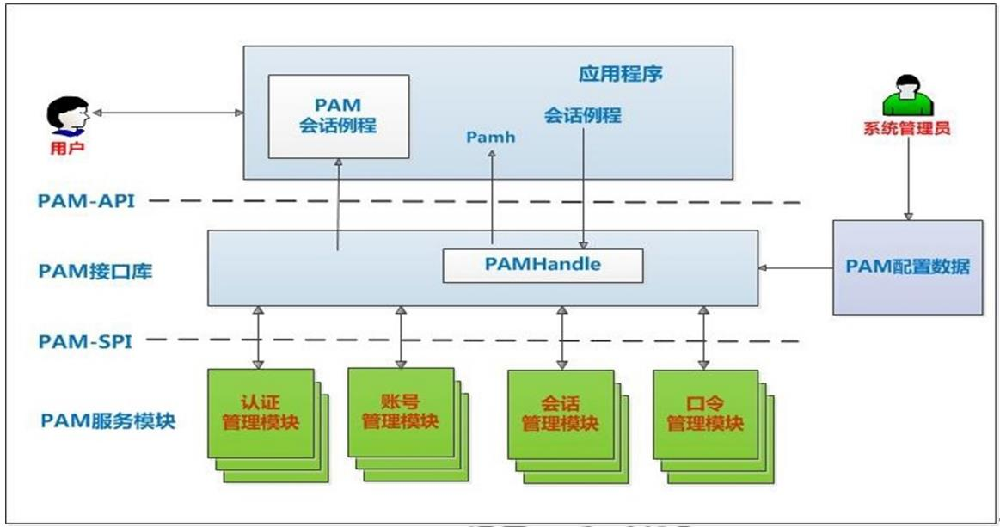
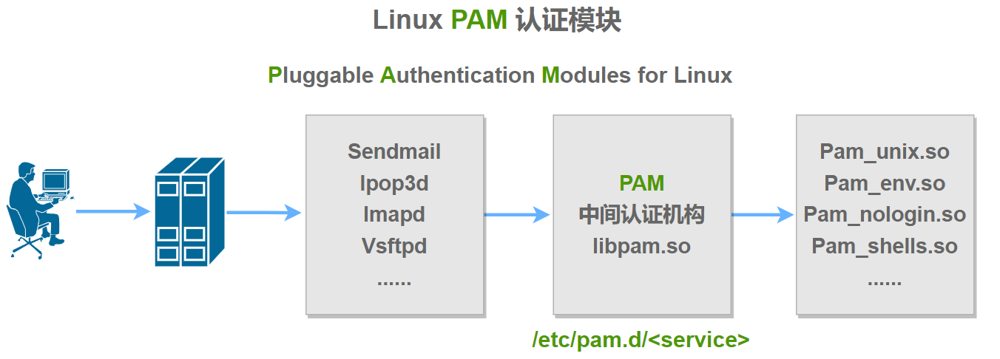

PAM认证机制
1 PAM介绍
PAM：Pluggable Authentication Modules，插件式的验证模块，Sun公司于1995 年开发的一种与认证相关的通用框架机制。PAM 只关注如何为服务验证用户的 API，通过提供一些动态链接库和一套统一的API，将系统提供的服务和该服务的认证方式分开，使得系统管理员可以灵活地根据需要给不同的服务配置不同的认证 方式而无需更改服务程序一种认证框架，自身不做认证
2 PAM架构

PAM提供了对所有服务进行认证的中央机制，适用于本地登录，远程登录，如：telnet,rlogin,fsh,ftp,点对点协议PPP，su等应用程序中，系统管理员通过PAM配置文件来制定不同应用程序的不同认证策略；应用程序开发者通过在服务程序中使用PAM API(pam_xxxx( ))来实现对认证方法的调用；而PAM服务模块的开发者则利用PAM SPI来编写模块（主要调用函数pam_sm_xxxx( )供PAM接口库调用，将不同的认证机制加入到系统中；PAM接口库（libpam）则读取配置文件，将应用程序和相应的PAM服务模块联系起来
3 PAM相关文件
包名: pam
模块文件目录：/lib64/security/*.so（放各种模块）
特定模块相关的设置文件：/etc/security/（复杂模块的专有配置文件）
应用程序调用PAM模块的配置文件
主配置文件：/etc/pam.conf，默认不存在，一般不使用主配置
为每种应用模块提供一个专用的配置文件：/etc/pam.d/APP_NAME（哪些服务调用/lib64/security/里哪些模块的配置文件）
注意：如/etc/pam.d存在，/etc/pam.conf将失效
范例：查看程序是否支持PAM
1 | [root@centos8 ~]#ldd `which sshd` |grep libpam |
4 PAM工作原理
PAM认证一般遵循这样的顺序：Service(服务)→PAM(配置文件)→pam_*.so
PAM认证首先要确定那一项服务，然后加载相应的PAM的配置文件(位于/etc/pam.d下)，最后调用认证文件(位于/lib64/security下)进行安全认证

PAM认证过程示例：
使用者执行/usr/bin/passwd 程序，并输入密码
passwd开始调用PAM模块，PAM模块会搜寻passwd程序的PAM相关设置文件，这个设置文件一般是在/etc/pam.d/里边的与程序同名的文件，即PAM会搜寻/etc/pam.d/passwd此设置文件
经由/etc/pam.d/passwd设定文件的数据，取用PAM所提供的相关模块来进行验证
将验证结果回传给passwd这个程序，而passwd这个程序会根据PAM回传的结果决定下一个动作（重新输入密码或者通过验证）
5 PAM配置文件格式说明
通用配置文件/etc/pam.conf格式,此格式不使用
1 | application type control module-path arguments |
专用配置文件/etc/pam.d/ 格式
1 | type control module-path arguments |
模块类型（module-type）
Auth：账号的认证和授权
Account：帐户的有效性，与账号管理相关的非认证类的功能，如：用来限制/允许用户对某个服务的访问时间，限制用户的位置(例如：root用户只能从控制台登录)
Password：用户修改密码时密码复杂度检查机制等功能
Session：用户会话期间的控制，如：最多打开的文件数，最多的进程数等
-type：表示因为缺失而不能加载的模块将不记录到系统日志,对于那些不总是安装在系统上的模块有用
Control
required ：一票否决，表示本模块必须返回成功才能通过认证，但是如果该模块返回失败，失败结果也不会立即通知用户，而是要等到同一type中的所有模块全部执行完毕，再将失败结果返回给应用程序，即为必要条件
requisite ：一票否决，该模块必须返回成功才能通过认证，但是一旦该模块返回失败，将不再执行同一type内的任何模块，而是直接将控制权返回给应用程序。是一个必要条件
sufficient ：一票通过，表明本模块返回成功则通过身份认证的要求，不必再执行同一type内的其它模块，但如果本模块返回失败可忽略，即为充分条件，优先于前面的required和requisite
optional ：表明本模块是可选的，它的成功与否不会对身份认证起关键作用，其返回值一般被忽略
include： 调用其他的配置文件中定义的配置信息
在 control 列中，对于更复杂的语法，可以写成如下格式
1 | [value1=action1 value2=action2 ...] |
module-path:
模块文件所在绝对路径：/path/XYZ.so
模块文件所在相对路径：/lib64/security目录下的模块可使用相对路径，如：pam_shells.so、pam_limits.so，表示 so 文件在 /lib64/security/ 目录下
有些模块有自已的专有配置文件，在/etc/security/*.conf目 录下，这种写法表示直接使用另一个配置，例如postlogin
Arguments
debug ：该模块应当用syslog( )将调试信息写入到系统日志文件中
no_warn ：表明该模块不应把警告信息发送给应用程序
use_first_pass ：该模块不能提示用户输入密码，只能从前一个模块得到输入密码
try_first_pass ：该模块首先用前一个模块从用户得到密码，如果该密码验证不通过，再提示用户输入新密码
use_mapped_pass 该模块不能提示用户输入密码，而是使用映射过的密码
expose_account 允许该模块显示用户的帐号名等信息，一般只能在安全的环境下使用，因为泄漏用户名会对安全造成一定程度的威胁
注意：修改PAM配置文件将马上生效
建议：编辑pam规则时，保持至少打开一个root会话，以防止root身份验证错误
6 PAM模块帮助
在线文档：http://www.linux-pam.org/Linux-PAM-html/
离线文档：http://www.linux-pam.org/documentation/
1 | man pam |
7 常用PAM模块
7.1 pam_nologin.so模块
功能：如果/etc/nologin文件存在，将导致非root用户不能登陆,当该用户登陆时，会显示/etc/nologin文件内容，并拒绝登陆，前提是相应的服务使用了该模块，此规则才会生效
查询有哪些服务使用了该模块
1 | [root@ubuntu ~]# grep pam_nologin /etc/pam.d/* |
默认此模块可以对ssh等登录有效，由于 su 服务没有使用该模块，所以使用 su 切换账号，不受影响
1 | [root@centos8 pam.d]#grep pam_nologin * |
范例
1 | #创建/etc/nologin文件，普通用户立即无法远程登录 |
7.2 pam_limits.so模块
功能：在用户级别实现对其可使用的资源的限制，例如：可打开的文件数量，可运行的进程数量，可用内存空间
查看有哪些服务使用了该模块
1 | [root@ubuntu ~]# grep pam_limits /etc/pam.d/* |
修改限制的实现方式：
（1）ulimit命令
用于对shell进程及其子进程进行资源限制，使用ulimit进行修改，立即生效，limit只影响shell进程及其子进程，用户登出后失效
可以在profile中加入ulimit的设置，变相的做到永久生效
ulimit的设定值是 per-process 的，也就是说，每个进程有自己的limits值
使用ulimit进行修改，立即生效
1 | -H 设置硬件资源限制. |
案例：查看各种默认资源限制
1 | [root@centos8 ~]#ulimit -a |
案例： 查看指定进程的资源限制
1 | #cat /proc/PID/limits |
案例：ulimit 命令修改用户可同时打开的最大文件个数
1 | [root@centos8 ~]#ulimit -n |
(2) 使用 pam_limits 模块来配置相关参数
配置文件：pam_limits的设定值是基于 per-process 的
1 | /etc/security/limits.conf #需要重启机器才能生效 |
配置文件格式：
1 | #每行一个定义 |
格式说明：
应用于哪些对象
1 | Username #单个用户 |
限制的类型
1 | Soft #软限制,普通用户自己可以修改 |
软限制（soft limit）： 这是用户可以自行调整的最大限制值（只要不超过硬限制）。当软限制被达到时，进程或用户可能会收到警告消息，但允许继续使用资源，除非资源的使用量达到了硬限制。
硬限制（hard limit）： 这是由管理员设定的最大限制值，普通用户不能更改硬限制，超过硬限制后，系统将采取强制措施，通常是拒绝进一步的资源分配或者终止进程，防止用户过度消耗系统资源。
限制的资源
1 | nofile #所能够同时打开的最大文件数量,默认为1024 |
案例：限制用户最多打开的文件数和运行进程数，并持久保存
1 | cat /etc/pam.d/system-auth |
案例：限制mage用户最大的同时登录次数
1 | [root@centos8 ~]#tail -n1 /etc/security/limits.conf |
生产环境下常用的调优选项
1 | vim /etc/security/limits.conf |
注意：systemd 的service 资源设置需要单独配置
在Centos7以上版本中，使用Systemd替代了之前的SysV。/etc/security/limits.conf文件的配置作用域缩小了，其作用范围是针对普通用户和用户组，而不是针对系统服务或进程。
/etc/security/limits.conf的配置，只适用于通过PAM认证登录用户的资源限制，它对systemd的service的资源限制不生效。因此登录用户的限制，通过/etc/security/limits.conf与/etc/security/limits.d下的文件设置即可
对于systemd service的资源设置，则需修改全局配置，全局配置文件放在/etc/systemd/system.conf和/etc/systemd/user.conf，同时也会加载两个对应目录中的所有.conf文件/etc/systemd/system.conf.d/*.conf和/etc/systemd/user.conf.d/*.conf。
system.conf是系统实例使用的，user.conf是用户实例使用的。
1 | vim /etc/systemd/system.conf |